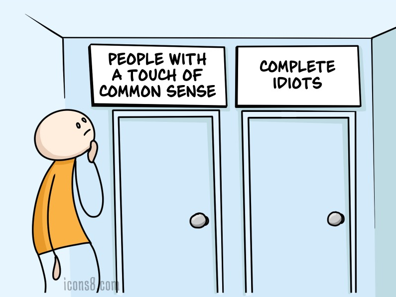

User testing
The key is to prove to yourself and the rest of the product team, that the spec you give them describes a winning product. Validate your ideas before building it. Performing user tests with real target users is the best way to reduce any doubts to as close to zero as possible.
The process
Here's a short description of how to handle a user test:
Define the set of tasks you want to test in advance.
-
Take the opportunity to learn how your user thinks about the problem today. (you will not get a second chance, because then their thoughts will be contaminated with your prototype and ideas)
Ask the user before the task starts "What do you think this does?"
Go through the tasks.
Ask your favorite question: "How likely is it that you would recommend this to your friends?"
-
How much are you willing to pay for this product/service? (Ask this question anyway, even if you consider offering it as a 'free' service, it will give you a nice reference across multiple uer tests).
Tip: It really helps to have 1 person administer the tests, and let one person take notes. Taking your desinger or an engineer along can be really interesting.
TL;DR
In user testing there are some definite do's and don'ts. Make sure to listen more and say less :)